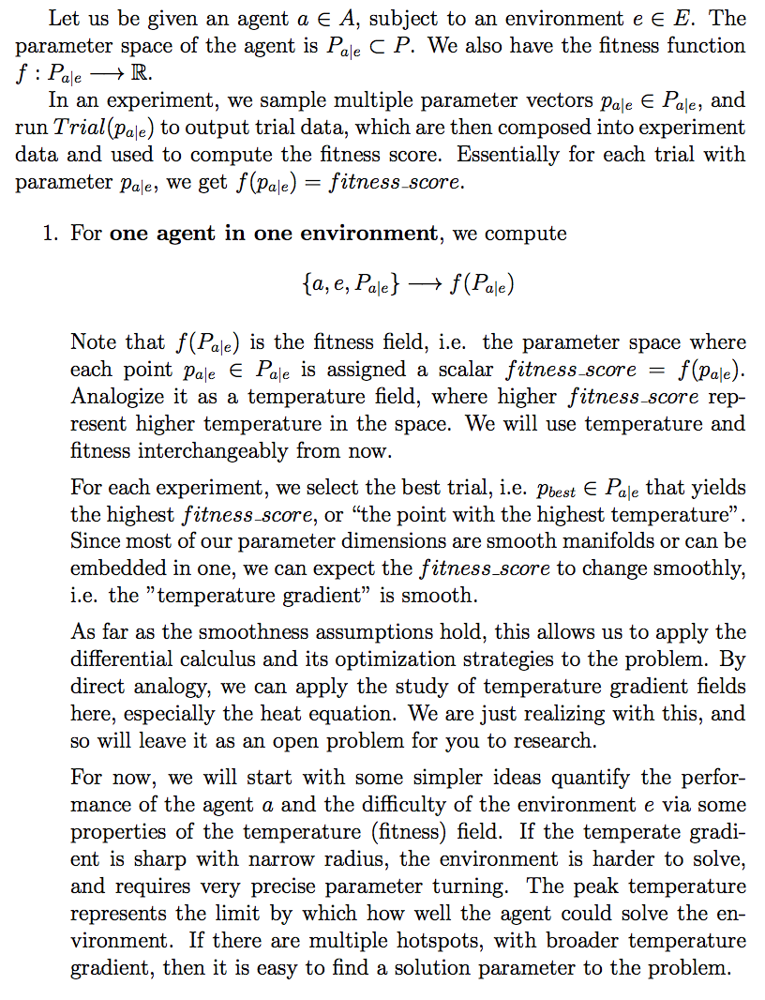
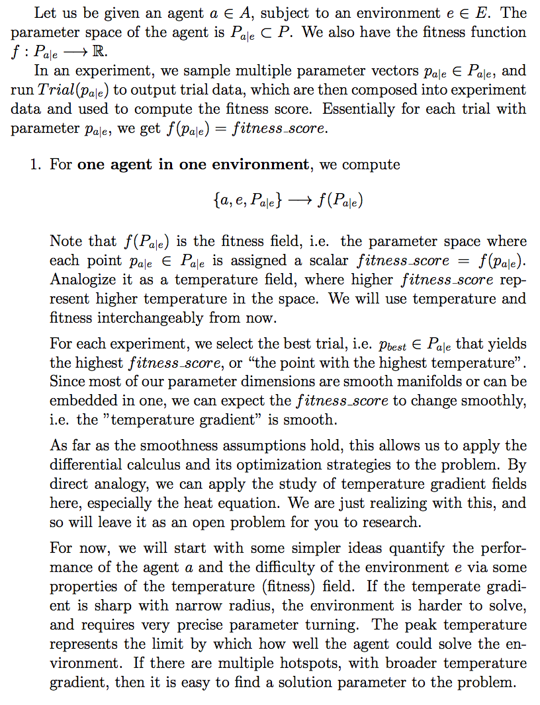
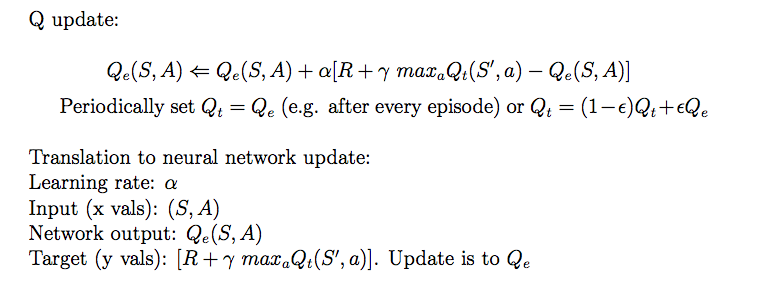
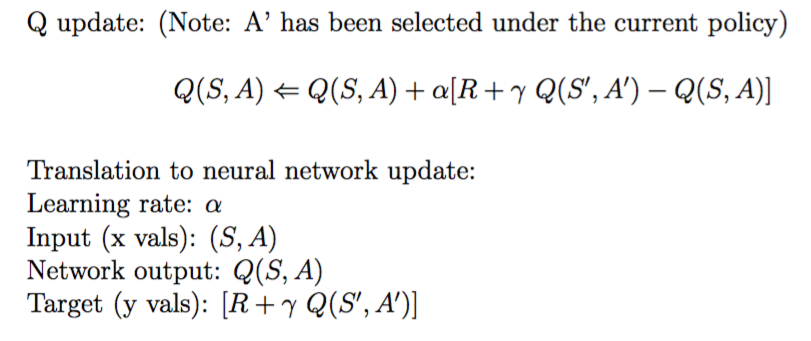

OpenAI Lab 


An experimentation system for Reinforcement Learning using OpenAI Gym, Tensorflow, and Keras.
OpenAI Lab is created to do Reinforcement Learning (RL) like science - theorize, experiment. It provides an easy interface to OpenAI Gym and Keras, with an automated experiment and evaluation framework.
This is motivated by the problems we faced in RL research: the difficulty of building upon other’s work, the lack of rigor in comparisons of research results, and the inertia to high level vision.
The Lab aims to make RL research more efficient and to encourage experimentation, by doing three things:
- Handles the basic RL environment and algorithm setups.
- Provides a standard, extensible platform with reusable components for developing deep reinforcement learning algorithms.
- Provides a rigorous experimentation system with logs, plots and analytics for testing new RL algorithms. Experimental settings are stored in standardized format for reproducibility and comparisons.
With OpenAI Lab, we could focus on researching the essential elements of reinforcement learning such as the algorithm, policy, memory, and parameter tuning. It allows us to build agents efficiently using existing components with the implementations from research ideas. We could then test the research hypotheses systematically by running experiments.
Ultimately, the Lab is a generalized framework for doing reinforcement learning, agnostic of OpenAI Gym and Keras. Pytorch-based implementations are on the roadmap, for example.
Implemented Algorithms
See the Fitness Matrix for the results of these algorithms below in the OpenAI gym environments.
| algorithm | implementation | eval score (pending) |
|---|---|---|
| DQN | DQN | - |
| Double DQN | DoubleDQN | - |
| Dueling DQN | - | - |
| Sarsa | DeepSarsa | - |
| Off-Policy Sarsa | OffPolicySarsa | - |
| PER (Prioritized Experience Replay) | PrioritizedExperienceReplay | - |
| CEM (Cross Entropy Method) | next | - |
| REINFORCE | - | - |
| DPG (Deterministic Policy Gradient) off-policy actor-critic | ActorCritic | - |
| DDPG (Deep-DPG) actor-critic with target networks | DDPG | - |
| A3C (asynchronous advantage actor-critic) | - | - |
| Dyna | next | - |
| TRPO | - | - |
| Q*(lambda) | - | - |
| Retrace(lambda) | - | - |
| Neural Episodic Control (NEC) | - | - |
| EWC (Elastic Weight Consolidation) | - | - |
Run the Lab
Next, see Installation and jump to Quickstart.

Timelapse of OpenAI Lab, solving CartPole-v0.
Installation
1. clone the repo
git clone https://github.com/kengz/openai_lab.git
If you plan to commit code, fork this repo then clone it instead.
2. install dependencies
Run the following commands to install:
- the system dependencies depending on your OS
- the project dependencies
For quick repeated setup on remote servers, instead of these commands, run the equivalent setup script: ./bin/setup
# cd into project directory
cd openai_lab/
### MacOS System Dependencies
# Homebrew
ruby -e "$(curl -fsSL https://raw.githubusercontent.com/Homebrew/install/master/install)"
# OpenAI Gym dependencies
brew install cmake boost boost-python sdl2 swig wget
# noti
(curl -L https://github.com/variadico/noti/releases/download/v2.5.0/noti2.5.0.darwin-amd64.tar.gz | tar -xz); sudo mv noti /usr/local/bin/
# Node >= v7.0
brew install node
# Python >= v3.0
brew install python3
### Linux Ubuntu System Dependencies
sudo add-apt-repository -y ppa:ubuntu-toolchain-r/test && sudo apt-get update
sudo apt-get install -y gcc-4.9 g++-4.9 libhdf5-dev libopenblas-dev git python3-tk tk-dev
# OpenAI Gym dependencies
sudo apt-get install -y cmake zlib1g-dev libjpeg-dev xvfb libav-tools xorg-dev python-opengl libboost-all-dev libsdl2-dev swig
# noti
(curl -L https://github.com/variadico/noti/releases/download/v2.5.0/noti2.5.0.linux-amd64.tar.gz | tar -xz); sudo mv noti /usr/local/bin/
# Node >= v7.0
(curl -sL https://deb.nodesource.com/setup_7.x | sudo -E bash -); sudo apt-get install -y nodejs
# Python >= v3.0
sudo apt-get -y install python3-dev python3-pip python3-setuptools
### Project Dependencies
./bin/copy-config
npm install; sudo npm i -g grunt-cli
# option 1: pip (ensure it is python3)
pip3 install -r requirements.txt
# option 2: virtualenv
virtualenv .env
source .env/bin/activate
pip3 install -r requirements.txt
# option 3: conda
conda env create -f environment.yml
source activate openai_lab
3. setup config files
Run ./bin/copy-config. This will create the config files from template, needed for lab usage:
config/default.jsonfor local development, used whengruntis ran without a production flag.config/production.jsonfor production lab run whengrunt -prodis ran with the production flag-prod.
Quickstart
The Lab comes with experiments with the best found solutions. Run your first below.
Single Trial
Run the single best trial for an experiment using lab command: grunt -best
Alternatively, the plain python command invoked above is: python3 main.py -e quickstart_dqn
Then check your ./data/ folder for graphs and data files.
The grunt command is recommended as it’s easier to schedule and run multiple experiments with. It sources from config/default.json, which should now have quickstart_dqn; more can be added.
{
"data_sync_destination": "~/Dropbox/openai_lab/data",
"NOTI_SLACK_DEST": "#rl-monitor",
"NOTI_SLACK_TOK": "GET_SLACK_BOT_TOKEN_FROM_https://my.slack.com/services/new/bot",
"experiments": [
"quickstart_dqn"
]
}
This trial is the best found solution agent of DQN solving Cartpole-v0. You should see the Lab running like so:

Experiment with Multiple Trials
Next step is to run a small experiment that searches for the best trial solutions.
{
"quickstart_dqn": {
"problem": "CartPole-v0",
"Agent": "DQN",
...
"param_range": {
"lr": [0.001, 0.01],
"hidden_layers": [
[32],
[64]
]
}
}
}
This is under under quickstart_dqn in rl/spec/classic_experiment_specs.json. The experiment studies the effect of varying learning rate lr and the DQN neural net architecture hidden_layers. If you like, change the param_range to try more values.
Then, run: grunt
Alternatively the plain python command is: python3 main.py -bp -e dqn
Then check your ./data/ folder for graphs and data files.
The experiment will take about 15 minutes (depending on your machine). It will produce experiment data from the trials. Refer to Analysis on how to interpret them.
Next Up
We recommend:
- Continue reading below for the optional installation steps.
- Solutions to see some existing solutions to start your agent from, as well as find environments/high scores to beat.
- Agents on how to create your agents from existing components, then add your own.
- Usage to continue reading the doc.
Updating Lab
Check the Lab’s latest release versions here.
- If you cloned directly the Lab, update with
git pull - If you forked, setup a remote and update fork
# update direct clone
git pull
# update fork
git fetch upstream
git merge upstream/master
Setup Data Auto-sync
We find it extremely useful to have data file-sync when running the lab on a remote server. This allows us to have a live view of the experiment graphs and data on our Dropbox app, on a computer or a smartphone.
For auto-syncing lab data/ we use Grunt file watcher for automatically copying data files to Dropbox. In your dropbox, set up a shared folder ~/Dropbox/openai_lab/data and sync to desktop.
Setup the config key data_sync_destination in config/{default.json, production.json}.
Setup Auto-notification
Experiments take a while to run, and we find it useful also to be notified automatically on completion. We use noti, which is also installed with bin/setup.
Set up a Slack, create a new channel #rl_monitor, and get a Slack bot token.
Setup the config keys NOTI_SLACK_DEST, NOTI_SLACK_TOK in config/{default.json, production.json}.
 Notifications from the lab running on our remote server beast.
Notifications from the lab running on our remote server beast.
Hardware
For setting up your own hardware, especially with a GPU, googling will help more than we could. Also, setup is usually non-trivial since there’re so many moving parts. Here’s the recommended references:
- A ~$1000 PC build (more expensive now ~$1200; buy your parts during Black Friday/sales.)
- The official TensorFlow installation guide, with GPU setup info
- Getting CUDA 8 to Work With openAI Gym on AWS and Compiling Tensorflow for CUDA 8 Compatibility
- Major OpenAI issue with SSH with xvfb failing with NVIDIA Driver due to opengl files
- NVIDIA cannot install due to X server running
- When login fails on Ubuntu after Nvidia installation
Usage
To understand the Lab’s Framework and Demo, skip to the next section.
The general flow for running a production lab is:
- Specify experiment specs in
rl/spec/*_experiment_specs.json, e.g."dqn", "lunar_dqn" - Specify the names of the experiments to run in
config/production.json - Run the lab, e.g.
grunt -prod -resume
Grunt will read off the JSON file in config/, which looks like:
{
"data_sync_destination": "~/Dropbox/openai_lab/data",
"NOTI_SLACK_DEST": "#rl-monitor",
"NOTI_SLACK_TOK": "GET_SLACK_BOT_TOKEN_FROM_https://my.slack.com/services/new/bot",
"experiments": [
"dqn",
"lunar_dqn"
]
}
Commands
We use Grunt to run the lab - set up experiments, pause/resume lab, run analyses, sync data, notify on completion. Internally grunt runs the python command (harder to use), logged to stdout as >> Composed command: ... python3 main.py -bp -t 5 -e dev_dqn | tee ./data/terminal.log;
The useful grunt commands are:
# when developing experiments specified in default.json
grunt
# developing, run single best trial without param selection
grunt -best
# run real lab experiments specified in production.json
grunt -prod
# run lab over ssh on remote server
grunt -prod -remote
# resume lab (previously incomplete experiments)
grunt -prod -remote -resume
# clear data/ folder and cache files
grunt clear
See below for the full Grunt Command Reference or the Python Command Reference.
development mode:
- All grunt commands default to this mode
- specify your dev experiment in
config/default.json - use only when developing your new algorithms
- the file-sync is in mock mode (emulated log without real file copying)
- no auto-notification
production mode:
- append the flag
-prodto yourgruntcommand - specify your full experiments in
config/production.json - use when running experiments for real
- the file-sync is real
- has auto-notification to Slack channel
Run Remotely
If you’re using a remote server, run the commands inside a screen. That is, log in via ssh, start a screen, run, then detach screen.
# enter the screen with the name "lab"
screen -S lab
# run real lab over ssh, in resume mode
grunt -prod -remote -resume
# use Cmd+A+D to detach from screen, then Cmd+D to disconnect ssh
# to resume screen next time
screen -r lab
# use Cmd+D to terminate screen when lab ends
Since a remote server is away, you should check the system status occasionally to ensure no overrunning processes (memory growth, large processes, overheating). Use glances (already installed in bin/setup) to monitor your expensive machines.
 Glances on remote server beast.
Glances on remote server beast.
Resume Lab
Experiments take a long time to complete, and if your process gets terminated, resuming the lab is trivial with a -resume flag: grunt -prod -remote -resume. This will use the config/history.json:
{
"dqn": "dqn-2017_03_19_004714"
}
The config/history.json is created in the last run that maps experiment_names to experiment_ids, and resume any incomplete experiments based on that experiment_id. You can manually tweak the file to set the resume target of course.
Grunt Command Reference
By default the grunt command (no task or flag) runs the lab in development mode using config/default.json.
The basic grunt command pattern is
grunt <task> -<flag>
# again, the useful grunt commands are:
# when developing experiments specified in default.json
grunt
# developing, run single best trial without param selection
grunt -best
# run real lab experiments specified in production.json
grunt -prod
# run lab over ssh on remote server
grunt -prod -remote
# resume lab (previously incomplete experiments)
grunt -prod -remote -resume
# clear data/ folder and cache files
grunt clear
The <task>s are:
- (default empty): run the lab
clear: clear thedata/folder and cache files. Be careful and make sure your data is already copied to the sync location
The <flag>s are:
-prod: production mode, useconfig/production.json-resume: resume incomplete experiments fromconfig/history.json-remote: when running over SSH, supplies this to use a fake display-best: run the finalized experiments with gym rendering and live plotting; without param selection. This uses the defaultparaminexperiment_specs.jsonthat shall be updated to the best found.-debug: verbose debug logging. This is for lab-level development only.-quiet: mute all python logging in grunt. This is for lab-level development only.
Python Command Reference
The Python command is invoked inside Gruntfile.js under the composeCommand function. Change it if you need to.
The basic python command pattern is:
python3 main.py -<flag>
# most common example, with piping of terminal log
python3 main.py -bp -t 5 -e dqn | tee -a ./data/terminal.log;
The python command
-b: blind mode, do not render graphics. Default:False-d: log debug info. Default:False-e <experiment>: specify which inside therl/spec/*_experiment_spec.jsonto run. Default:-e dev_dqn. Can be aexperiment_name, experiment_id.-p: run param selection. Default:False-q: quiet mode, log warning only. Default:False-t <times>: the number of sessions to run per trial. Default:1-x <max_episodes>: Manually specifiy max number of episodes per trial. Default:-1and program defaults to value inrl/spec/problems.json
Experiments
The experimental framework design and terminology should be familiar, since they’re borrowed from experimental science. The Lab runs experiments and produces data for analysis.
Definition
An experiment runs separate trials by varying parameters. Each trial runs multiple sessions for averaging the results.
An experiment consists of:
- an environment (problem) from OpenAI Gym
- an agent to solve the environment.
Specification
An experiment is specified by an experiment_spec in rl/spec/*_experiment_specs.json.
{
"dqn": {
"problem": "CartPole-v0",
"Agent": "DQN",
"HyperOptimizer": "GridSearch",
"Memory": "LinearMemoryWithForgetting",
"Optimizer": "AdamOptimizer",
"Policy": "BoltzmannPolicy",
"PreProcessor": "NoPreProcessor",
"param": {
"lr": 0.02,
"gamma": 0.99,
"hidden_layers": [64],
"hidden_layers_activation": "sigmoid",
"exploration_anneal_episodes": 10
},
"param_range": {
"lr": [0.001, 0.005, 0.01, 0.02],
"gamma": [0.95, 0.97, 0.99, 0.999],
"hidden_layers": [
[16],
[32],
[64],
[16, 8],
[32, 16]
]
}
}
}
It consists of:
experiment_name: the key of the JSON. e.g.dqnproblem: name of the environment. e.g.CartPole-v0- agent: and its components in
rl/, specified by the class nameAgent(Learning algorithm): decision function for learning from experiences gained by acting in an environment (eg Q-Learning, Sarsa). This is also the main class for agents. All other components of an agent are contained within this class.Policy: decision function for acting in an environment. Controls exploration vs. exploitation trade off(e.g. epsilon greedy, boltzmann)Memory: for storing experiences gained by acting in an environment. Controls how experiences are sampled for an agent to learn from. (e.g. random uniform with no forgetting, prioritized sampling with forgetting)Optimizer: controls how to optimize the function approximators contained within the agent (e.g. Stochatic Gradient Descent, Adam)HyperOptimizer: hyperparameter optimization algorithms used to vary the agent parameters and run trials with them (e.g grid search, random search)Preprocessor: controls the transformations made to state representaions before being passed as inputs to the policy and learning algorithm. (e.g. no preprocessing, concatenating current and previous state). Useful for Atari.
param: the default parameter values used (control variables)param_range: the hyperparameter space ranges to search through byHyperOptimimzer(experiment variables).
Structure
How experiments > trials > sessions are organized and ran.
When the Lab runs an experiment with experiment_name (e.g. dqn):
- it creates a timestamped
experiment_id(dqn-2017_03_19_004714) - the experiment runs multiple trials over the hyperparameter space
- the trials are ordered for resumability (in case machine dies)
- each trial has
trial_id(dqn-2017_03_19_004714_t0), tied to a unique set of param values - a trial runs multiple sessions
- each session has
session_id(dqn-2017_03_19_004714_t0_s0) - a session runs the environment-agent, produces graphs and
session_datai.e.sys_vars - the session saves its graph to
<session_id>.png - the session returns
sys_varsto its trial
- each session has
- the trial gathers all the
sys_vars, run some averaging analytics, then compose all that intotrial_data - the trial returns the
trial_dataand saves it to<trial_id>.json
- the experiment composes all
trial_datainto aexperiment_data - it runs analytics to produce graphs
<experiment_id>_analysis.png, <experiment_id>_correlation.png - it compute the
fitness_scorefor each trial, rank them by best-first, then save the data grid to<experiment_id>_analysis_data.csv - experiment ends
Lab Demo
Given the framework explained above, here’s a quick demo.
Suppose we aim to solve the CartPole-v0 problem with the plain DQN agent. Suppose again for this experiment, we implement a new agent component, namely a Boltzmann policy, and try to find the best parameter sets for this new agent.
Specify Experiment
The example below is fully specified in rl/spec/classic_experiment_specs.json under dqn:
{
"dqn": {
"problem": "CartPole-v0",
"Agent": "DQN",
"HyperOptimizer": "GridSearch",
"Memory": "LinearMemoryWithForgetting",
"Optimizer": "AdamOptimizer",
"Policy": "BoltzmannPolicy",
"PreProcessor": "NoPreProcessor",
"param": {
"lr": 0.02,
"gamma": 0.99,
"hidden_layers": [64],
"hidden_layers_activation": "sigmoid",
"exploration_anneal_episodes": 10
},
"param_range": {
"lr": [0.001, 0.005, 0.01, 0.02],
"gamma": [0.95, 0.97, 0.99, 0.999],
"hidden_layers": [
[16],
[32],
[64],
[16, 8],
[32, 16]
]
}
}
}
Specifically of interests, we have specified the variables:
- experiment_name:
dqn - problem: CartPole-v0
- variable agent component:
Boltzmannpolicy - control agent variables:
DQNagentLinearMemoryWithForgettingAdamOptimizerNoPreProcessor
- hyperparameter space: the
"param_range"JSON - hyperparameter optimizer:
GridSearch
Given GridSearch HyperOptimizer, this experiment will try all the discrete combinations of the param_range, which makes for 4x4x5=80 trials. Each trial will run a max of 5 sessions (terminate on 2 if fail to solve). Overall, this experiments will run at most 80 x 5 = 400 sessions, then produce experiment_data and the analytics.
Lab Workflow
The example workflow to setup this experiment is as follow:
- Add the new theorized component
Boltzmanninrl/policy/boltzmann.py - Specify
dqnexperiment spec inrl/spec/classic_experiment_spec.jsonto include this new variable, reuse the other existing RL components, and specify the param range. - Add this experiment to the lab queue in
config/production.json - Run experiment with
grunt -prod - Analyze the graphs and data
Now that you can produce the experiment data and graphs, see how to analyze them.
Analysis
Once the Lab is running experiments, it will produce data. This section details how to analyze and understand the data, before we can contribute to the Solutions.
An experiment produces 3 types of data files in the folder data/<experiment_id>/:
- session plots:
<session_id>.png - trial_data:
<trial_id>.json - experiment data:
<experiment_id>_analysis_data.csv<experiment_id>_analysis.png<experiment_id>_analysis_correlation.png
We will illustrate with an example experiment from the dqn solution PR.
Session Graphs
The best session graph from the dqn-2017_03_19_004714 experiment. From the session graph we can see that the agent starts learning the CartPole-v0 task at around episode 15, then solves it before episode 20. Over time the loss decreases, the solution becomes stabler, and the mean rewards increases until the session is solved reliably.
When an experiment is running, the lab will plot the session graphs live, one for each session.
How to read
A session graph has 3 subplots:
total rewards and exploration rate vs episode: directly records the (blue) total rewards attained at the end of each episode, in relation to the (red) exploration rate (
epsilon,tau, etc. depending on the policy).The 2 lines usually show negative correlation - when the exploration rate drops, the total rewards should rise. When a solution becomes stable, the blue line should stay around its max.
mean rewards over the last 100 episodes vs episode: measures the 100-episode mean of the total rewards from above.
Defined by OpenAI, this metric is usually how a solution is identified - when it hits a target solution score, which would mean that the solution is sufficiently strong and stable.
loss vs time: measures the loss of the agent’s neural net. This graph is all the losses concatenated over time, over all episodes.
There is no specific unit for the loss as it depends on what loss function is used in the NN architecture (typically
mean_squared_error). As the NN starts getting more accurate, the loss should decrease.
Analysis Graph
The analysis graph from the dqn-2017_03_19_004714 experiment. There’re numerous dark points with solved_ratio 1, which is expected since CartPole-v0 is the simplest environment. There are clear trends cross the x-values - gamma=0.95 is unstable; 2-hidden-layer NN is unsuitable for the problem, but wider 1-hidden-layer is good; learning rate lr=0.001 is stabler, but lr=0.02 is a good balance between stability and fitness_score.
The analysis graph is the primary graph used to judge the overall experiment - how all the trials perform. It is a pair-plot of the measurement metrics on the y-axis, and the experiment variables on the x-axis.
The y-axis measurement metrics
fitness_score: the final evaluation metric the Lab uses to select a fit agent (an agent with the fit parameter set for that class of Agent). The design and purpose of it is more involved - see metrics for more.mean_rewards_stats_max: the max of all themean_rewardsover all the sessions of a trial. Measures the max solution power of a trial.max_total_rewards_stats_mean: the statistical mean of all themax_total_rewardsover all the sessions of a trial. Measures the agent’s average peak performance.epi_stats_min: the min of the termination episode of a session, i.e. the fastest solved session of a trial. The lower the better, as it would imply that the agent can solve the environment faster.
The hue metrics
Each data point represents a trial, with the data averaged over its sessions. The points are colored (see legend) with the hue:
solved_ratio_of_sessions: how many sessions are solved out of the total sessions in a trial, 0 means none, 1 means all.
The granularity of the solved_ratio_of_sessions depends on the number of sessions ran per trial. From experience, we settle on 5 sessions per trial as it’s the best tradeoff between granularity and computation time.
Multiple sessions allow us to observe the consistency of an agent. As we have noticed across the parameter space, there is a spectrum of solvability: agents who cannot solve at all, can solve occasionally, and can always solve. The agents that solves occasionally can be valuable when developing an new algorithm, and most people will throw them away - this is bad when a strong agent is hard to find in the early stage.
How to read
Every subplot in the graph shows the distribution of all the trial points in the pair of y vs x variables, with the other x’ dimensions flattened. For each, observe the population distribution, y-positions, and trend across the x-axis.
Note that these will use swarmplot which allows us to see the distribution of points by spreading them horizontally to prevent overlap. However, when the x-axis has too many values (.e.g continuous x-values in random search), it will switch to scatter plot instead.
An example from rand_acrobot with scatterplot instead of swarmplot for gamma and lr. This is when RandomSearch is used. The example is from the rand_acrobot-2017_03_28_082754 PR
Population distribution: more darker points implies that the many trials could solve the environment consistently. Higher ratio of dark points also means the environment is easier for the agent. If the points are closer and the distribution has smaller vertical gaps, then the x is a stabler value for the y value even when other x’ dimensions vary. In a scatterplot, clustering of points in a random search also shows the convergence of the search.
trend across y-values: the fitter trial will show up higher in the y-axes (except for epi_stats_min). Generally good solutions are scarce and they show up at higher fitness_score, whereas the non-solutions get clustered in the lower region. Notice how the fitness_score plots can clearly distinguish the good solutions (darker points), whereas in the mean_rewards_stats_max and max_total_rewards_stats_mean plots it is hard to tell apart. We will discuss how the custom-formulated fitness_score function achieves this in the metrics section.
trend across x-values: to find a stable and good x-value, observe the vertical gaps in distribution, the clustering of darker points. Usually there’s one maxima with a steady trend towards it. Recall that the plots flatten the other x’ values, but the dependence on x value is usually very consistent across x’ that there will still be a flattened trend.
Correlation Graph
The correlation graph from the dqn-2017_03_19_004714 experiment. We can see smooth contours of spectrum in them, suggesting that the x-values are stable - small change in values will not be catastrophic. There are 2 darker regions in the contour; the distribution confirms that gamma=0.999 and lower lr are indeed stabler, since they have higher populations of darker points. The instability of gamma=0.95 shows clearly as 2 segments of stacked bar with huge contrast.
The correlation graph reveals pairwise x-value correlations that is flattened in the analysis graph. This is a pair-plot between the orderable parameter variables.
How to read
The diagonals simply shows the population distribution for that x-value; the off-diagonal plots show the fitness score heatmap that tells how to best combine separate parameter values. Note that the heatmap color scheme does not represent absolute fitness, but points are colored by which fitness_score_bin they fall into.
The points are semi-transparent, so if they overlap, their colors will stack instead of hiding the points behind.
Data
After glancing through the graphs, it will be easier to understand the data and find the targets.
How to read
The <experiment_id>_analysis_data.csv will show the data for each trial, sorted by the highest fitness_score first. The left columns are the measured output values; then they’re separated by the trial_id; the right columns are the parameter values for the trial.
The trial_id will tell us which trial_data to check for even more details on the best trials. Usually we can also spot some trend in the right parameter columns.
The best <trial_id>.json will show us directly what is its experiment_spec, and more stats about the trial. When submitting a solution PR, retrieve the experiment_spec to update the default *_experiment_spec.json, and get the fitness_score from here too.
| best_session_epi | best_session_id | best_session_mean_rewards | best_session_stability | fitness_score | mean_rewards_per_epi_stats_mean | mean_rewards_stats_mean | mean_rewards_stats_max | epi_stats_mean | epi_stats_min | solved_ratio_of_sessions | max_total_rewards_stats_mean | trial_id | variable_gamma | variable_hidden_layers | variable_lr |
|---|---|---|---|---|---|---|---|---|---|---|---|---|---|---|---|
| 114 | dqn-2017_03_19_004714_t79_s2 | 195.59 | 0.845361 | 9.635032 | 1.326499 | 195.404 | 195.66 | 154.2 | 114.0 | 1.0 | 200.0 | dqn-2017_03_19_004714_t79 | 0.999 | [64] | 0.02 |
| 157 | dqn-2017_03_19_004714_t36_s4 | 196.07 | 1.010526 | 9.282276 | 1.155354 | 195.602 | 196.07 | 169.0 | 157.0 | 1.0 | 200.0 | dqn-2017_03_19_004714_t36 | 0.97 | [64] | 0.001 |
| 140 | dqn-2017_03_19_004714_t28_s0 | 196.11 | 0.989474 | 9.178363 | 1.179311 | 195.564 | 196.11 | 167.2 | 140.0 | 1.0 | 200.0 | dqn-2017_03_19_004714_t28 | 0.97 | [32] | 0.001 |
| 123 | dqn-2017_03_19_004714_t50_s0 | 195.16 | 0.96875 | 9.074483 | 1.276302 | 195.136 | 195.3 | 160.6 | 123.0 | 1.0 | 200.0 | dqn-2017_03_19_004714_t50 | 0.99 | [32] | 0.01 |
| 153 | dqn-2017_03_19_004714_t16_s2 | 195.48 | 1.010526 | 8.98669 | 1.159941 | 195.466 | 195.7 | 168.6 | 153.0 | 1.0 | 200.0 | dqn-2017_03_19_004714_t16 | 0.95 | [64] | 0.001 |
dqn-2017_03_19_004714_analysis_data.csv, top 5 trials, from the dqn-2017_03_19_004714 experiment. We can see that among the dominating parameter values are gamma=0.999, hidden_layers=[64], lr=[0.02]. The best trial json below.
{
"experiment_spec": {
"Agent": "DQN",
"HyperOptimizer": "GridSearch",
"Memory": "LinearMemoryWithForgetting",
"Optimizer": "AdamOptimizer",
"Policy": "BoltzmannPolicy",
"PreProcessor": "NoPreProcessor",
"experiment_name": "dqn",
"param": {
"decay": 0,
"exploration_anneal_episodes": 10,
"gamma": 0.999,
"hidden_layers": [64],
"hidden_layers_activation": "sigmoid",
"lr": 0.02
},
"problem": "CartPole-v0"
},
"metrics": {
"best_session_epi": 114,
"best_session_id": "dqn-2017_03_19_004714_t79_s2",
"best_session_mean_rewards": 195.59,
"best_session_stability": 0.8453608,
"epi_stats_mean": 154.2,
"fitness_score": 9.635032,
"max_total_rewards_stats_mean": 200,
"mean_rewards_per_epi_stats_mean": 1.326499,
"mean_rewards_stats_mean": 195.404,
"solved_ratio_of_sessions": 1,
"t_stats_mean": 199,
"time_taken": "0:41:19"
},
...
This concludes the analysis. See the solution PR here. The best trial is dqn-2017_03_19_004714_t79, with fitness_score=9.635032, and the variables:
- lr: 0.02
- gamma: 0.999
- hidden_layers_shape: [64]
Now that you know how to analyze the data,
- start finding problems to beat and submitting your solutions
- learn more about the evaluation metrics
Solutions
Agents and best solutions by OpenAI Lab users. We want people to start from working solutions instead of stumbling their ways there.
Submission instructions
If you invent a new algorithm/combination that beats the best solutions, please submit a Pull Request to OpenAI Lab. Refer to the PR template for the submission guideline. See examples from the accepted solution PRs.
To learn how to analyze experiment data, refer to Analysis.
Fitness Matrix
A matrix of the best fitness_score of Agents v.s. Environments, sourced from the accepted solution PRs. See Metric for the design of fitness score and generalized metrics.
| DQN | DoubleDQN | Sarsa | OffPolicySarsa | DoubleDQN-PER | ActorCritic | DPG | DDPG | |
|---|---|---|---|---|---|---|---|---|
| CartPole-v0 | 9.635032 | 10.34826 | - | 12.98525 | - | 13.90989 | - | - |
| CartPole-v1 | 13.22935 | 16.06697 | - | 18.91624 | - | 30.57067 | - | - |
| Acrobot-v1 | -0.1051617 | -0.1045992 | - | -0.1127294 | - | - | - | - |
| MountainCar-v0 | - | -0.03744196 | - | - | - | - | - | - |
| MountainCarContinuous-v0 | n/a | n/a | n/a | n/a | n/a | - | - | - |
| Pendulum-v0 | n/a | n/a | n/a | n/a | n/a | - | - | -0.2984732 |
| LunarLander-v2 | 2.786624 | 2.992104 | - | 3.313421 | - | - | - | - |
| LunarLanderContinuous-v2 | n/a | n/a | n/a | n/a | n/a | - | - | - |
| BipedalWalker-v2 | - | - | - | - | - | - | - | - |
| BipedalWalkerHardcore-v2 | - | - | - | - | - | - | - | - |
| CarRacing-v0 | - | - | - | - | - | - | - | - |
| AirRaid-v0 | - | - | - | - | - | - | - | - |
| Alien-v0 | - | - | - | - | - | - | - | - |
| Assault-v0 | - | - | - | - | - | - | - | - |
| Breakout-v0 | - | - | - | - | - | - | - | - |
| MsPacman-v0 | - | - | - | - | - | - | - | - |
| Pong-v0 | - | - | - | - | - | - | - | - |
| Qbert-v0 | - | - | - | - | - | - | - | - |
| SpaceInvader-v0 | - | - | - | - | - | - | - | - |
| FlappyBird-v0 | - | - | - | - | - | - | - | - |
| Snake-v0 | - | - | - | - | - | - | - | - |
Agents Fitness Matrix
A projection of the Fitness Matrix along the Agents axis. This shows overall status of the Agents in OpenAI Lab. Feel free to invent new ones! For more details, see Algorithms and Families of RL Algorithms.
Pending: we have a generic formalization to cross-evaluate Agents using heatmap statistics; see Metrics. This is on the roadmap.
| algorithm | implementation | eval score (pending) |
|---|---|---|
| DQN | DQN | - |
| Double DQN | DoubleDQN | - |
| Dueling DQN | - | - |
| Sarsa | DeepSarsa | - |
| Off-Policy Sarsa | OffPolicySarsa | - |
| PER (Prioritized Experience Replay) | PrioritizedExperienceReplay | - |
| CEM (Cross Entropy Method) | next | - |
| REINFORCE | - | - |
| DPG (Deterministic Policy Gradient) off-policy actor-critic | ActorCritic | - |
| DDPG (Deep-DPG) actor-critic with target networks | DDPG | - |
| A3C (asynchronous advantage actor-critic) | - | - |
| Dyna | next | - |
| TRPO | - | - |
| Q*(lambda) | - | - |
| Retrace(lambda) | - | - |
| Neural Episodic Control (NEC) | - | - |
| EWC (Elastic Weight Consolidation) | - | - |
Environments Fitness Matrix
A projection of the Fitness Matrix along the Environments axis. This shows the best solutions for the environments. The list of accepted solutions can be seen in the solution PRs.
Classic Environments
| problem | fitness score | epis before solve / best 100-epi mean | author | experiment_spec |
|---|---|---|---|---|
| CartPole-v0 | 13.90989 | 3 | kengz/lgraesser | cartpole_ac_softmax |
| CartPole-v1 | 30.57067 | 3 | kengz/lgraesser | cartpole_v1_ac_softmax |
| Acrobot-v1 | -0.1045992 | -104.34 | kengz/lgraesser | acrobot_offpol_sarsa |
| MountainCar-v0 | -0.03744196 | 970 | kengz/lgraesser | mountain_double_dqn |
| MountainCarContinuous-v0 | - | - | - | - |
| Pendulum-v0 | -0.2984732 | -150.8091 | kengz/lgraesser | pendulum_ddpg |
Box2D Environments
| problem | fitness score | epis before solve / best 100-epi mean | author | experiment_spec |
|---|---|---|---|---|
| LunarLander-v2 | 3.313421 | 200 | kengz/lgraesser | lunar_offpol_sarsa |
| LunarLanderContinuous-v2 | - | - | - | - |
| BipedalWalker-v2 | - | - | - | - |
| BipedalWalkerHardcore-v2 | - | - | - | - |
| CarRacing-v0 | - | - | - | - |
Atari Environments
| problem | fitness score | epis before solve / best 100-epi mean | author | experiment_spec |
|---|---|---|---|---|
| AirRaid-v0 | - | - | - | - |
| Alien-v0 | - | - | - | - |
| Assault-v0 | - | - | - | - |
| Breakout-v0 | - | - | - | - |
| MsPacman-v0 | - | - | - | - |
| Pong-v0 | - | - | - | - |
| Qbert-v0 | - | - | - | - |
| SpaceInvader-v0 | - | - | - | - |
PyGame Environments
| problem | fitness score | epis before solve / best 100-epi mean | author | experiment_spec |
|---|---|---|---|---|
| FlappyBird-v0 | - | - | - | - |
| Snake-v0 | - | - | - | - |
Universe Environments
| problem | fitness score | epis before solve / best 100-epi mean | author | experiment_spec |
|---|---|---|---|---|
| - | - | - | - | - |
Metrics
The Lab setup allows us to run experiments at scale; the standardized framework also allows us to reliably compare multiple agents (algorithms) and environments (problems). These are shown with the Fitness Matrix, which also necessitates a higher level evaluation metric.
With the Lab, we are breeding multiple agents across many environments and selecting the best ones. Naturally, this selection metric is called the fitness_score. Some evolutionary search algorithm for the HyperOptimizer is on our roadmap.
The Fitness Matrix is a projection from the parameter space of each agent-environment pair, where each matrix cell is the highest fitness score the agent could achieve in the environment.
To understand the bigger picture, the domain for the fitness function for each matrix cell is the parameter space of the agent conditioned on the environment. Inside the parameter space, each point gets mapped to a fitness score.
To analogize, see fitness score as temperature, then we have a heatmap inside the parameter space, and we are searching for the hottest point and recording that in a cell of the Fitness Matrix.
In this section, we will formalize these ideas.
Fitness Score
The fitness function f is the base function behind the Fitness Matrix and the fitness heatmap. It computes the fitness score for each point (trial) in a parameter space.
The fitness function’s design is motivated by the need to have a richer evaluation of an agent, and the ability of the Lab to provide such data. We felt that the mean rewards metric used in the OpenAI gym evaluation is insufficient, but it is included in our design under strength.
The fitness score of a trial is as follows:
fitness_score = mean_rewards_per_epi_mean * [(1+stability_mean) * ((1+consistency)**2)] ** sign(mean_rewards_per_epi_mean)
or renaming variables by what the terms represent:
fitness_score = power * distinguisher
where
power = mean_rewards_per_epi_meandistinguisher = amplifier ** sign(power)amplifier = (1+stability_mean) * ((1+consistency)**2)
The fitness score is designed to capture the following:
- strength:
mean_rewards(over the past 100 episodes) - speed:
1/epi - stability: session-level stability,
stable_epi_count / mastery_gap - consistency: AKA trial-level stability,
solved_ratio_of_session - granularity: in
1+stabilityand1+consistencyto ensure partial solution doesn’t get lost when stability and consistency = 0 - amplification: amplify by session-level stability linearly with
*(1+stability), and by trial-level stability quadratically with*(1+consistency)**2 - distinguishability: multiply amplifier if
poweris positive, else divide; essentially*(amplifier**sign(power))
Strength
The higher (more positive) the mean_rewards an agent gets, the stronger it is. The mean is taken over the past 100 episodes, as common to OpenAI gym.
Speed
Given two same mean_rewards, the agent that achieves it in less episodes is faster, with speed = 1/epi. This yields the notion of power = strength * speed = mean_rewards_per_epi. Use the sessions-mean of a trial, i.e. mean_rewards_per_epi_mean = mean of multiple mean_rewards_per_epi values.
Stability
stability = stable_epi_count / mastery_gap for a session, with range 0.0 - 1.0 from unstable to stable. Measures session-level stability. Use the sessions-mean of a trial, i.e. mean of multiple stability values.
stable_epi_count= the number of stable episodes, where stable means an episode passes ther_threshold.r_threshold=sys_vars['SOLVED_MEAN_REWARD']if the problem is solvable;max_rewards - (0.10 * (max_rewards-min_rewards))otherwise.first_solved_epi= first episode that passes ther_threshold.mastery_gap=last_epi - first_solved_epinormally, orINFto yield stability 0.0 iffirst_solved_epiis undefined because no episode passes the threshold.
The reasoning for the definition is simple: regardless if the problem is solved or not, we want to see if the agent could stability its performance. Once it solves (for solvable problems) or achieves a sufficiently high score (unsolved problems), its mean_rewards every episode should not drop too much, even when accounting for random fluctuations. We can define a minimal threshold (10% less than the ideal) that the subsequent episodes should surpass. Then, the stability is simple the ratio of the number of episodes that pass the threshold after the first solution.
Consistency
consistency = solved_ratio_of_session for a trial, with range 0.0 - 1.0 from inconsistent to consistent. This is the trial-level measurement of stability, as it measures how consistently the agent can solve an environment given multiple repeated sessions.
consistency = 0 always for unsolved problems (unbounded rewards) since solution is undefined.
Granularity
When stability=0 or consistency=0 the multiplier will drop to zero, regardless if there is any partial solutions. This will make training harder as the agent will not learn from partial solutions if these are treated as non-solutions. So, restore the granularity that preserves partial solution simply by adding 1, i.e. 1+stability and 1+consistency.
Amplification
To separate solutions from noise, amplify the good ones and separate them out, while diminish and cluster the worse ones together. Amplify by session-level stability linearly with *(1+stability) since it’s of the same order as power. Amplify by trial-level stability quadratically with *(1+consistency)**2 since trial stability is of the next order. Amplifier is always positive.
Distinguishability
Always amplify to make better solutions have more positive fitness score. If power is negative, amplify toward the 0 axis, i.e. divide by amplifier. If power is positive, amplify away from the 0 axis, i.e. multiply the amplifier. Essentially, distinguisher = amplifier**sign(power).
Generalized Metrics
With the fitness function defined above, we can evaluate a single agent in a single environment. In fact, this is a single experiment with multiple trials, and we compute a fitness score per trial, using the trial’s parameter values. We then pick the max fitness score for the Fitness Matrix.
Given that the Lab can run multiple agents across environments in its standardized framework, naturally we ask:
- we can evaluate one agent in one environment, (experiment metrics)
- how do we evaluate and compare multiple agents in one environment? (environment metrics)
- how about one agent in multiple environments? (agent metrics)
- how about the universal-view of multiple agents in multiple environments? (universal metrics)
This section formalizes the generalized metrics for these, and shows that the Fitness Matrix is just a max-function projection of some higher dimensional space.
Generalization
We include the formalization of evaluation metrics across the Agent space and Environment space, and present a generalization, which produces the Fitness Matrix.
We’re using LaTeX for better symbolic rendering.
 



Algorithms
The currently implemented algorithms combine deep neural networks with a number of classic reinforcement learning algorithms. These are just a starting point. Please invent your own!
What is reinforcement learning?
Reinforcement learning (RL) is learning from interaction with an environment, from the consequences of action, rather than from explicit teaching. RL become popular in the 1990s within machine learning and artificial intelligence, but also within operations research and with offshoots in psychology and neuroscience.
Most RL research is conducted within the mathematical framework of Markov decision processes (MDPs). MDPs involve a decision-making agent interacting with its environment so as to maximize the cumulative reward it receives over time. The agent perceives aspects of the environment’s state and selects actions. The agent may estimate a value function and use it to construct better and better decision-making policies over time.
RL algorithms are methods for solving this kind of problem, that is, problems involving sequences of decisions in which each decision affects what opportunities are available later, in which the effects need not be deterministic, and in which there are long-term goals. RL methods are intended to address the kind of learning and decision making problems that people and animals face in their normal, everyday lives.
- Rich Sutton
For further reading on reinforcement learning see David Silver’s lectures and the book, Reinforcement Learning: An Introduction, by Sutton and Barto.
Why are deep neural networks useful for solving RL problems?
RL problems are characterized by incomplete information. The transition probabilities from one state to another given the action taken, for all states and actions are not known. Nor is the distribution of the rewards given a state and action. So in order to solve problems, RL algorithms involve approximating one or more unknown, typically complex, non linear functions. Deep neural networks make good candidates for these function approximators since they excel at approximating complex functions, particularly if the states are characterized by pixel level features.
For further reading on neural networks see Neural Networks and Deep Learning
Terminology
- Agent: encapsulates a specific algorithm. Each agent has a policy, memory, optimizer, and preprocessor
- Online training: agents are trained periodically during episodes
- Episodic training: agents are only trained after an episode has completed and before the next episode begins
- Policy: rule which determines how to act in a given state, e.g. choose the action A which has the highest Q-value in state
S. May be deterministic or stochatic. - Q function:
Q(S, A), estimates the value of taking actionAin stateSunder a specific policy. - Q-vallue: Value of
Qfunction for a particularSandA. - On policy: the same policy is used to act and evaluate the quality of actions.
- Off policy: a different policy is used to act and evaluate the quality of actions.
Families of RL Algorithms
To navigate the different RL algorithms:
Model-free
- Value-based
- DQN
- DoubleDQN
- Sarsa
- OffpolSarsa
- Policy-based
- REINFORCE
- ActorCritic
- DPG - typically implemented with ActorCritic, there’s a different policy for exploration and target
- DDPG - very similar to DPG except with target networks and batch normalization
- Value-based
Model based
- Value based
- Dyna
- Policy based
- pending
- ActorCritic
- pending
- Value based
Implemented Algorithms
See the overall list of agents and their implementation status under the Agents Fitness Matrix. This section briefly explains the theories behind the implemented algorithms/agents.
Q-Learning
Q-learning algorithms attempt to estimate the optimal Q function, i.e the value of taking action A in state S under a specific policy. Q-learning algorithms have an implicit policy, typically epsilon-greedy in which the action with the maximum Q value is selected with probability (1 - epsilon) and a random action is taken with probability epsilon. The random actions encourage exploration of the state space and help prevent algorithms from getting stuck in local minima.
Q-learning algorithms are off-policy algorithms in that the policy used to evaluate the value of the action taken is different to the policy used to determine which state-action pairs are visited.
It is also a temporal difference algorithm. Updates to the Q function are based on existing estimates. The estimate in time t is updated using an estimate from time t+1. This allows Q-Learning algorithms to be online and incremental, so the agent can be trained during an episode. The update to Q_t(S, A) is as follows

For more details, please see chapter 6 of Reinforcement Learning: An Introduction, Sutton and Barto.
Since the policy that is used to evaluate the target is fixed (a greedy policy that selects the action that maximises the Q-value for a particular state) and is different to the policy used to determine which state-action pairs are being visited, it is possible to use experience replay to train an agent.
This is often needed for Agents to act in environments to get experiences. Experiences consist of the state, the action taken, the next state, and the reward, and are denoted as <S_t, A_t, R_{t+1}, S_{t+1}>. These experiences are stored in the agents memory. Periodically during an episode the agent is trained. During training n batches of size m are selected from memory and the Q update step is performed. This is different to Sarsa algorithms which are on-policy and agents are trained after each experience using only the most recent experience.
Deep Q-Learning
Standard Q-learning algorithm with experience replay. Online training every n experiences.

Agents:
DQN: function approximator - feedforward neural networkConvDQN: function approximator - convolutional network
Double Q-Learning
Q-learning algorithm with two Q function approximators to address the maximisation bias problem, Q_1, and Q_2. One Q function is used to select the action in the next state, S', the other is used to evaluate the action in state S'. Periodically the roles of each Q function are switched. Online training every n experiences.

Agents:
DoubleDQN: function approximator - feedforward neural networkDoubleConvQN: function approximator - convolutional network
Deep Q-Learning with weight freezing
Deep Q-Learning algorithms tends to be unstable. To address this issue, create two Q function approximators, one for exploration, Q_e, and one for evaluating the target, Q_t. The target is a copy of the exploration network with frozen weights which lag the exploration network.
These weights are updated periodically to match the exploration network. Freezing the target network weights help avoids oscillations in the policy, where slight changes to Q-values can lead to significant changes in the policy, and helps break correlations between the Q-network and the target. See David Silver’s lecture slides for more details. Online training every n experiences.

Agents:
FreezeDQN: function approximator - feedforward neural network
Sarsa
Sarsa algorithms also attempt to estimate the optimal Q function. They are on policy algorithms so the policy used to evaluate the target is the same as to the policy used to determine which state-action pairs are being visited.
Like Q-Learning, Sarsa is a temporal difference algorithm. However, since they are on policy, it is trickier to take advantage of experience replay, requiring storage of the action in state t+1 and the Q-value for the state and action selected in t+1 in an experience. In the following implementations, updates are made after each action with the exception of off policy expected Sarsa.
Sarsa update:

This update is made each time the agent acts in an environment and gets an experience <S_t, A_t, R_{t+1}, S_{t+1}>
Sarsa
Standard Sarsa algorithm

Agents:
DeepSarsa: function approximator - feedforward neural network
Expected Sarsa
Uses the expected value of the Q function under the current policy to construct the target instead of the Q-value for the action selected.

Agents
DeepExpectedSarsa: function approximator - feedforward neural network
Off Policy Expected Sarsa
Sarsa is typically an on policy algorithm. However, if a different policy is used to evaluate the target than the one used to explore, it becomes and off-policy algorithm. With this set up, Q-Learning can be understood as a specific instance of Off Policy Expected Sarsa, when the policy used to evaluate the target is the greedy policy.
In off policy expected sarsa, actions are selected under the exploration policy, (annealling epsilon greedy for example). Then the value of next state and action pair is calculated as the expected Q value under the target policy, for example epsilon greedy with some fixed value for epsilon.
Q update and translation to neural network update: Same as ExpectedSarsa with fixed epsilon.
Agents:
OffPolicySarsa: function approximator - feedforward neural network
Policy Gradient
In progress
Deep Deterministic Policy Gradient
In progress
RL Theory Resources
- Demystifying Deep Reinforcement Learning: an introductory blog post about deep reinforcement learning; a good and short first intro for new comers.
- Deep Reinforcement Learning: 90 minute video overview by John Schulman. Assumes some knowledge of neural networks. If you are not familiar with neural networks, then start with Sutton and Barto’s book or David Silver’s course
- Reinforcement Learning: An Introduction: Classic textbook by Sutton and Barto. A good place to go next after watching John Schulman’s talk. Link is to the in progress 2nd edition.
- David Silver’s Reinforcement Learning Course
- Playing Atari with Deep Reinforcement Learning, 2013: The famous paper from DeepMind describing a convolutional neural network Q-Learning architecture which learned to play seven different Atari games, achieving superhuman performance in three of them.
Agents
Agents are containers for reinforcement learning algorithms. They consist of a number of different components which are specified in the experiment_specs.
The corresponding source code folder. When composing an agent by choosing components, look at the source code folder to see the list of available
Classesto use, and look at their__init__method to see what parameters are available.
"experiment_spec": "rl/spec/",
"problem": "rl/spec/problems.json",
"Agent": "rl/agent/",
"Policy": "rl/policy/",
"Memory": "rl/memory/",
"Optimizer": "rl/optimizer/",
"HyperOptimizer": "rl/hyperoptimizer/",
"PreProcessor": "rl/preprocessor/",
problem: the gym environment the agent is solving.Agent(Learning algorithm),: decision function for learning from experiences gained by acting in an environment (eg Q-Learning, Sarsa). This is also the main class for agents. All other components of an agent are contained within this class.Policy: decision function for acting in an environment. Controls exploration vs. exploitation trade off(e.g. epsilon greedy, boltzmann)Memory: for storing experiences gained by acting in an environment. Controls how experiences are sampled for an agent to learn from. (e.g. random uniform with no forgetting, prioritized sampling with forgetting)Optimizer: controls how to optimize the function approximators contained within the agent (e.g. Stochatic Gradient Descent, Adam)HyperOptimizer: hyperparameter optimization algorithms used to vary the agent parameters and run trials with them (e.g grid search, random search)PreProcessor: controls the transformations made to state representaions before being passed as inputs to the policy and learning algorithm. (e.g. no preprocessing, concatenating current and previous state). Useful for Atari.param: the default parameters, unified for all agent components. To know what parameters are available, look into the__init__method of the components you’re using. We have ensured there are no conflicting keys.param_range: the parameter space specification for the HyperOptimizer to search over in an experiment with many trials.
To define an Agent you must specify each of the components. The example below is from the specification for dqn in rl/spec/classic_experiment_specs.json. The rl/spec/*.json files contains lots of other examples.
{
"dqn": {
"problem": "CartPole-v0",
"Agent": "DQN",
"HyperOptimizer": "GridSearch",
"Memory": "LinearMemoryWithForgetting",
"Optimizer": "AdamOptimizer",
"Policy": "BoltzmannPolicy",
"PreProcessor": "NoPreProcessor",
"param": {
"lr": 0.02,
"gamma": 0.99,
"hidden_layers": [64],
"hidden_layers_activation": "sigmoid",
"exploration_anneal_episodes": 10
},
"param_range": {
"lr": [0.001, 0.005, 0.01, 0.02],
"gamma": [0.95, 0.97, 0.99, 0.999],
"hidden_layers": [
[16],
[32],
[64],
[16, 8],
[32, 16]
]
}
}
}
Each of the components with the exception of Agent and Policy are uncoupled, so can be freely switched in an out for different types of components. Different combinations of components may work better than others. We leave that up to you to experiment with. For some inspiration, see how the Lab users build the best solutions.
For the currently implemented algorithms, the following Agents can go with the following Policies.
DQN, Sarsa, ExpectedSarsa, OffPolSarsa, FreezeDQN: EpsilonGreedyPolicy, OscillatingEpsilonGreedyPolicy, TargetedEpsilonGreedyPolicy, BoltzmannPolicyDoubleDQN: DoubleDQNPolicy, DoubleDQNBoltzmannPolicy
problem
code location: rl/spec/problems.json
Problems are not part of agent, but they are part of the experiment_spec that gets specified with the agent.
We have not added all the OpenAI gym environments AKA problems. If you get to new environments using the lab, please add them in rl/spec/problems.json, and it should be clear from those examples.
Moreover, when adding new problems, consider the dependencies setup too, such as Mujoco. Please add these to the bin/setup so that other users could run it.
Agent
code location: rl/agent/
See the overall list of agents and their implementation status under the Agents Fitness Matrix. See algorithms section for an explanation of the currently implemented agents (learning algorithms).
The main Agent class that will house all the other components. This is where the algorithms like DQN, DDQN, DDPG are implemented. This class shall contain only the algorithm-specific logic; the generic components are modularized for reuse across different agents.
Despite the multitude of parameters you can see in the contructor of the Agent classes, Agents always need the following:
gamma: how much to discount the futurehidden_layers: list of hidden layer sizes for neural network function approximatorshidden_layers_activation: activation function for the hidden layers
The input and output layer sizes are autoamtically inferred from the environment specs.
"dqn": {
"Agent": "DQN",
"param": {
"hidden_layers": [32, 16],
"hidden_layers_activation": "sigmoid",
},
For HyperOptimizer to search over the network architecture (yes this is possible), use the auto-architecture mode for building the network. The HyperOptimizer will search over the network depth and width (2 parameters is sufficient to construct a whole network). To do so, set the auto-architecture param to true, and specific the num_hidden_layers and the first_hidden_layer_size.
"dqn": {
"Agent": "DQN",
"param": {
"hidden_layers_activation": "sigmoid",
"auto_architecture": true,
"num_hidden_layers": 3,
"first_hidden_layer_size": 512
},
Policy
code location: rl/policy/
A policy is a decision function for acting in an environment. Policies take as input a description of the state space and output an action for the agent to take.
Depending on the algorithm used, agents may directly approximate the policy (policy based algorithms) or have an indirect policy, that depends on the Q-value function approximation (value based algorithms). Algorithms that approximate both the policy and the Q-value function are known as actor-critic algorithms.
All of the algorithms implemented so far are value-based. The policy for acting at each timestep is often a simple epsilon-greedy policy.

Alternatively, an indirect policy may use the Q-value to output a probability distribution over actions, and sample actions based on this distribution. This is the approach taken by the Boltzmann policies.
A critical component of the policy is how is balances exploration vs. exploitation. To learn how to act well in an environment an agent must explore the state space. The more random the actions an agent takes, the more it explores. However, to do well in an environment, an agent needs to take the best possible action given the state. It must exploit what it has learnt.
Below is a summary of the currently implemented policies. Each takes a slightly different approach to balancing the exploration-exploitation problem.
EpsilonGreedyPolicy
Parameterized by starting value for epsilon (init_e), min value for epsilon (final_e), and the number of epsiodes to anneal epsilon over (exploration_anneal_episodes). The value of epsilon is decayed linearly from start to min.
"dqn": {
"Policy": "EpsilonGreedyPolicy",
"param": {
"init_e" : 1.0,
"final_e" : 0.1,
"exploration_anneal_episodes": 100
},
DoubleDQNPolicy
When actions are not random this policy selects actions by summing the outputs from each of the two Q-state approximators before taking the max of the result. Same approach as EpsilonGreedyPolicy to decaying epsilon and same params.
BoltzmannPolicy
Parameterized by the starting value for tau (init_tau), min value for tau (final_tau), and the number of epsiodes to anneal epsilon over (exploration_anneal_episodes). At each step this policy selects actions based on the following probability distribution

Tau is decayed linearly over time in the same way as in the EpsilonGreedyPolicy.
"dqn": {
"Policy": "BoltzmannPolicy",
"param": {
"init_tau" : 1.0,
"final_tau" : 0.1,
"exploration_anneal_episodes": 10
},
DoubleDQNBoltzmannPolicy
Same as the Boltzmann policy except that the Q value used for a given action is the sum of the outputs from each of the two Q-state approximators.
TargetedEpsilonGreedyPolicy
Same params as epsilon greedy policy. This policy swtches between active and inactive exploration cycles controlled by partial mean rewards and it distance to the target mean rewards.
DecayingEpsilonGreedyPolicy
Same params as epsilon greedy policy. Epsilon is decayed exponentially.
OscillatingEpsilonGreedyPolicy
Same as epsilon greedy policy except at episode 18 epsilon is dropped to the max of 1/3 or its current value or min epsilon.
Creating your own
A policy has to have the following functions. You can create your own by inheriting from Policy or one of its children.
def select_action(self, state):
'''Returns the action selected given the state'''
def update(self, sys_vars):
'''Update value of policy params (e.g. epsilon)
Called each timestep within an episode'''
Memory
code location: rl/memory/
The agent’s memory stores experiences that an agent gains by acting within an environment. An environment is in a particular state. Then the agent acts, and receives a reward from the environment. The agent also receives information about the next state, including a flag indicating whether the next state is the terminal state. Finally, an error measure is stored, indicating how well an agent can estimate the value of this particular transition.
This information about a single step is stored as an experience. Each experience consists of
- Current state
- Action taken
- Reward
- Next state
- Terminal
- Error
(state, action, next_state, reward, terminal, error)
Crucially, the memory controls how long experiences are stored for, and which experiences are sampled from it to use as input into the learning algorithm of an agent. Below is a summary of the currently implemented memories.
LinearMemory
The size of the memory is unbounded and experiences are sampled random uniformly from memory.
LinearMemoryWithForgetting
"dqn": {
"Memory": "LinearMemoryWithForgetting",
"param": {
"max_mem_len" : 10000
},
Parameterizes by max_mem_len param which bounds the size of the memory. Once memory reaches the max size, the oldest experiences are deleted from the memory to make space for new experiences. Experiences are sampled random uniformly from memory.
LeftTailMemory
Like linear memory with sampling via a left-tail distribution. This has the effect of drawing more from newer experiences.
PrioritizedExperienceReplay
Experiences are weighted by the error, a measure of how well the learning algorithm currently performs on that experience. Experiences are sampled from memory in proportion to the p value (adjusted error value)
p = (1 + e)** alpha
The parameter e > 0 (if not positive, our implementation will bump it up) is a constant added onto the error to prevent experiences with error 0 never being sampled. alpha controls how spiked the distribution is. The lower alpha the closer to unform the distribution is. alpha = 0 corresponds to uniform random sampling.
"dqn": {
"Memory": "PrioritizedExperienceReplay",
"param": {
"e" : 0.01,
"alpha": 0.6,
"max_mem_len" : 10000
},
This has the effect of drawing more from experiences that the learning algorithm doesn’t perform well on, i.e. the experiences from which is has most to learn. The size of the memory is bounded as in LinearMemoryWithForgetting.
RankedMemory
Memory sorted by the mean_rewards of each episode. Still experimental.
Creating your own
A memory has to have the following functions. You can create your own by inheriting from Memory or one of its children.
def add_exp(self, action, reward, next_state, terminal, error):
'''add an experience to memory'''
def get_exp(self, inds):
'''get a batch of experiences by indices
helper function called by rand_minibatch'''
def pop(self):
'''get the last experience (batched like get_exp()'''
def size(self):
'''returns the size of the memory'''
def rand_minibatch(self, size):
'''returns a batch of experiences sampled from memory'''
Optimizer
code location: rl/optimizer/
Controls how to optimize the function approximators contained within the agent. For feedforward and convolutional neural networks, we suggest using Adam with the default parameters for everything except the learning rate as this is widely considered to be the best algorithm for optmizing deep neural network based function approximators. For recurrent neural networks we suggest using RMSprop.
SGD
Stochastic Gradient Descent. Parameterized by lr (learning rate), momentum, decay and nestorov. See Keras for more details.
"dqn": {
"Optimizer": "SGDOptimizer",
"param": {
"lr": 0.02,
"momentum" : 0.9
"decay": 0.00001
"nesterov": true
},
Adam
Parameterized by lr (learning rate), beta_1, beta_2, epsilon, decay. See Keras for more details.
RMSprop
Parameterized by lr (learning rate), rho, epsilon, decay. See Keras for more details.
HyperOptimizer
code location: rl/hyperoptimizer/
Controls how to search over the hyperparameter space. We suggest using each of the three hyperoptimizers in the following order when trying to find the optimal parameters for an agent in an environment, to help gradually narrow down the best search space. From rough to fine granularity, LineSearch > GridSearch > RandomSearch.
LineSearch
Varies one parameter per trial while using default values for the rest. This is useful when trying to estimate of what value range should work for a parameter without having to search through the full space blindly.
Given that we have built a proven base of best parameters, this is now seldom used, as we often could know the optimal parameter values to a small range.
GridSearch
Once the search space is narrowed down, it’s time to do a systematic grid search. This takes the cartesian products of the discrete list of options, i.e. every combination, and run trials. This is the most commonly used, and could help us properly see the heatmap when we probe the search space systematically.
RandomSearch
Random Search by sampling on hysphere around a search path:
1. init x a random position in space
2. until termination (max_eval or fitness, e.g. solved all), do:
2.1 sample new pos some radius away: next_x = x + r
2.2 if f(next_x) > f(x) then set x = next_x
After GridSearch, there are usually intermediate values between the grid points that could yield slightly higher fitness score. Narrow down even further to the best search space as shown in the GridSearch heatmap, and do a random search. This is the final fine-tuning. The RandomSearch algorithm is directional and greedy.
HyperOptimizer Roadmap
These are the future hyperparameter optimization algorithms we’d like to implement standalone in the Lab. The implementations for them currently exists, but they’re too bloated, and their engineering aspects are not ideal for the Lab.
Implementation Guideline
All implemented hyperoptimizers shall extend the base HyperOptimizer class in rl/hyperoptimizer/base_hyperoptimizer.py and follow its design for compatibility. Below we show this design to be general theoretically and practically. Moreover, do not use bloated dependencies.
Theoretical design:
A hyperoptimizer is a function h that takes:
- a trial (objective) function
Trial - a parameter space
P(implemented inexperiment_spec)
and runs the algorithm:
- search the next
pinPusing its internal search algorithm, add to its internalparam_search_list. - run a (slow) function
Trial(p) = fitness_score(inside trial data) - update search using the feedback
fitness_score - repeat until max steps or fitness condition met
Note that the search space P is a tensor space product of m bounded real spaces R and n bounded discrete spaces N. The search path in param_search_list must also be well-ordered to ensure resumability.
Implementation requirements:
- we want order-preserving and persistence in search for the ability to resume/reproduce an experiment.
- the search algorithm may have its own internal memory/belief to facilitate search.
- the
Trialfunction shall be treated as a blackboxTrial(p) = fitness_scorewith input/output(p, fitness_score)for the generality of implementation/
Specification of search space:
1. for real variable, specify a distribution (an interval is just a uniformly distributed space) in the experiment_spec.param_range. Example:
"lr": {
"min": 0.0005,
"max": 0.05
}
2. for discrete variable, specify a list of the values to search over (since it is finite anyway) in the experiment_spec.param_range. This will automatically be sorted when read into HyperOptimizer to ensure ordering. Example:
"lr": [0.01, 0.02, 0.05, 0.1, 0.2]
The hyperopt implementation shall be able to take these 2 types of param_range specs and construct its search space.
Note that whether a variable is real or discrete can be up to the user; some variable such as lr can be sampled from interval 0.001 to 0.1 or human-specified options [0.01, 0.02, 0.05, 0.1, 0.2]. One way may be more efficient than the other depending on the search algorithm.
The experiment will run it as:
# specify which hyperoptimizer class to use in spec for bookkeeping
Hopt = get_module(GREF, experiment_spec['HyperOptimizer'])
hopt = Hopt(Trial, **experiment_kwargs)
experiment_data = hopt.run()
Preprocessor
code location: rl/preprocessor/
Sometimes preprocessing the states before they are received by the agent can help to simplify the problem or make the agent strong. One example is the pixel preprocessing the removes color channels and rescales image size, in order to reduce unnecessary information overload. The other is to concat states from sequential timesteps to present richer, correlated information that is otherwise sparse.
The change in dimensions after preprocessing is handled automatically, so you can use them without any concerns.
NoPreProcessor
The default that does not preprocess, but pass on the states as is.
StackStates
Concat the current and the previous states. Turns out this boosts agent performance in the LunarLander-v2 environment.
DiffStates
Take the difference new_states - old_states.
Atari
Convert images to greyscale, downsize, crop, then stack 4 most recent states together. Useful for the Atari environments.
Development
For agent-specific development, see Agents. This section details the general, non-agent development guideline.
The design of the code is clean enough to simply infer how things work by existing examples. The fastest way is to develop is to dig into the source code.
data/: data folders grouped per experiment, each of which contains all the graphs per trial sessions, JSON data file per trial, and csv metrics dataframe per run of multiple trialsrl/agent/: custom agents. Refer tobase_agent.pyanddqn.pyto build your ownrl/hyperoptimizer/: Hyperparameter optimizers for the Experimentsrl/memory/: RL agent memory classesrl/optimizer/: RL agent NN optimizer classesrl/policy/: RL agent policy classesrl/preprocessor/: RL agent preprocessor (state and memory) classesrl/spec/: specify new problems and experiment_specs to run experiments forrl/spec/component_locks.json: locks to check RL component combination in specsrl/analytics.py: the data analytics module for output experiment datarl/experiment.py: the main high level experiment logicrl/util.py: Generic util
Roadmap
Check the latest under the Github Projects
Motivations
This section is more casual, but we thought we’d share the motivations behind the Lab.
We the authors never set out to build OpenAI Lab with any grand vision in mind. We just wanted to test our RL ideas in OpenAI Gym, faced many problems along the way, and their solutions became features. These opened up new adjacent possibles to do new things, and even more problems, and so on. Before we knew it, the critical components fell it place and we had something very similar to a scientific lab.
The problems faced by us are numerous and diverse, but there are several major categories. The first two are nicely described by WildML’s Denny in his post Engineering Is The Bottleneck In (Deep Learning) Research, which resonates strongly with a lot of people.
1. the difficulty of building upon other’s work
If you have tried to implement any algorithms by looking at someone elses code, chances are it’s painful. Sometimes you just want to research a small component like a prioritized memory, but you’d have to write 90% of the unrelated components from scratch. Simply look at the solution source codes submitted to the OpenAI Gym leaderboard; you can’t extend them to build something much bigger.
Of many implementations we saw which solve OpenAI gym environments, many had to rewrite the same basic components instead of just the new components being researched. This is unnecessary and inefficient.
There is no design or engineering standards for reinforcement learning, and that contributes to the major inertia in RL research. A lot of times research ideas are not difficult to come by, but implementing them is hard because there is no reliable foundation to build on.
We patiently built every piece of that foundation because giving up wasn’t an option, so here it is. As the Lab grows, we hope that engineers and researchers can experiment with an idea fast by building on top of our existing components, and of course, contribute back.
2. the lack of rigor in comparisons
Denny describes this already, read his blog.
As the Lab became mature, we became more ambitious and try to solve more environment, with more agents. This naturally begs the question, “how do we compare them, across agents and environments?”
Multiple experiments running in the Lab will produce standardized data analytics and evaluation metrics. This will allow us to compare agents and environments meaningfully, and that is the point of the Lab’s Fitness Matrix. It also inspired a generalization of evaluation metrics, which we have only discovered recently.
3. the inertia to high level vision
When you’re heels down implementing an algorithm and the extra 90% side components from scratch, it’s hard to organize your work from a high level. Having to worry about other irrelevant components also makes you lose focus. The Lab removes that inertia and frees us from that myopic vision.
This freedom means more mental energy and time to focus on the essential components of research. It opens up new adjacent possibles and has us asking new questions.
The New Adjacent Possibles
With those problems above resolved, the Lab opens up the new adjacent possibles and allows us to do more. Below are some:
- independent discovery of RankedMemory, which is essentially the Priorized Experience Replay (PER) idea.
- the study of hyperparameters at scale, with the Analysis Graph.
- an explosion of experiments; suddenly we have the ability to test a lot of ideas quickly.
- new high level, powerful visuals from the analysis graphs to eyeball the performance and potentials of an agent.
- auto-architecture of agent’s neural net, because we wanted to study some variables of the NN architecture as hyperparameters.
- the perspective of RL as experimental science, and experimenting as breeding agents in the environments.
- the design of a new
fitness_scorethat provides richer evaluation metrics, which considers solution speed, stability, consistency, and much more. - the Fitness Matrix and the ability to compare fitness_score across its grid.
- the generalization of evaluation metrics, which casts the hyperoptimization problem as one of temperature fields and differential calculus. Also gives the Fitness Fields Matrix.
Contributing
- Invented a new algorithm/added some features? Submit a Pull Request here.
- Created some stronger agents that beats the current results? Read here to submit new solution.
- Wanna just talk? Hit us up on Twitter below.
Lab Contributors
See the full list of contributors here.
Authors
Note: we are not affiliated with OpenAI; OpenAI Lab is not tied to any organizations.
- Wah Loon Keng. twitter: @kengzwl
- Laura Graesser. twitter: @lgraesser3
OpenAI we hope you find this useful!